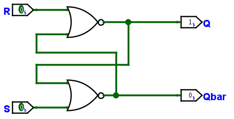
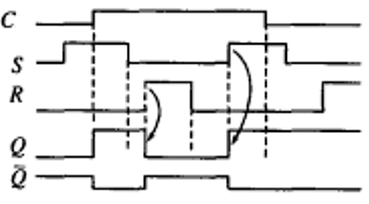

锁存器与触发器
实验背景
关于本节
本节内容多来自维基百科 Flip-flop(electronics) 词条。
锁存器(Latch)以及触发器(Flip-flop)被称为双稳态多谐振荡器(Bistable multivibrator)，即拥有两个稳定状态并可以用来记录和表达两种状态信息的电子部件，可以用来存储 1 比特的数据（两种状态分别为 0 和 1）。
锁存器与触发器通常分为几种类型：SR("set-reset") D("data" or "delay") T("toggle") JK，本实验中主要关注 SR 与 D 两种类型的锁存器和触发器。
锁存器
锁存器结构较简单，在此介绍 SR 锁存器、D 锁存器以及“门控”的概念。
SR 锁存器
SR 锁存器通过两个输入端口(S, R)对锁存器保存数据进行修改或保持，其功能表如下，S 含义为 set 即将数据设置为 1，R 含义为 reset 即将数据重置为 0：
具体实现上，根据使用逻辑门（输入端口有效电平）的不同分为 SR NOR latch 和 \(\overline{SR}\) NAND latch。后者名字中的“非”表示其值为假时（低电平）有效，将上表 S 和 R 列的 0 与 1 互换即可得到 \(\overline{SR}\) NAND latch 的功能表。SR 锁存器的原理图如下，图中 Qbar 为存储数据 Q 的反：

将图中的 NOR 门换为 NAND 门，并交换输出端口（或者输入端口）即可获得 \(\overline{SR}\) 锁存器：
门控 SR 锁存器
为 SR 锁存器添加一个输入 C，只有它的值为 1 时才能对锁存器存储的值进行修改。以门控 SR 锁存器的原理图为例：
D 锁存器 & 门控 D 锁存器
可以观察到，SR 锁存器存在不稳定状态这一问题，不稳定状态与其输入相关，很容易想到一种解决方法，即只用一个输入端口 D 来对存储内容进行修改（当然，这样就无法做到“保持状态”）。
为其加上“门控”，可以得到本实验要求实现的门控 D 锁存器：
空翻现象
对于门控锁存器，当门控有效时，改变输入就会造成锁存器保存值的变化，多次改变输入就会导致锁存器输出多次变化。这种在一个有效周期（或时钟脉冲）可以多次改变状态的现象，叫做空翻现象（或称竞态现象），即下图 C 处高位时的变化过程：

触发器
为解决锁存器造成的空翻现象，提出了触发器。根据触发器的设计可以分为主从触发器(Master-slave flip-flop)和边沿触发器(Edge-triggered flip-flop)。
主从触发器
以主从 D 触发器为例，它由两个门控 D 锁存器串接组成，并将其中一个“门控”设置为时钟的反。“主从”之名是因为从锁存器的数据受主锁存器输出的控制。
对于一个正边沿主从 D 触发器（如上图），“正边沿”意为时钟从低到高(low-to-high)时触发器的输出发生改变，其工作过程如下：
clk处于低位时，master 门控有效，slave 门控无效- 对
D进行修改，master 的输出会改变，但 slave 的输出（也就是触发器的输出）不会改变
- 对
clk上升沿后一小段时间内，master 门控变为无效，slave 门控有效- master 输出不会再改变，slave 接收到 master 的输出并改变或维持自身输出
clk处于高位时，master 门控无效，slave 门控有效- 对
D进行修改，master 的输出不会改变，因此 slave 的输出也不会改变
- 对
一次性采样问题，主从触发器在主锁存器门控有效时，可以任意改变自身状态，因此我们需要将输入信号维持至少半个时钟周期（即时钟低电平时），如果有信号“毛刺”会导致主锁存器的状态有不期望的变化，因此产生了“一次性采样”问题。
边沿触发器
以正边沿 D 触发器为例，在这个触发器的设计里包括两个阶段输入处理与输出处理。输入处理部分由图中左侧的两个 \(\overline{SR}\) 锁存器构成，它处理时钟信号 clk 和数据信号 D以提供给输出处理部分锁存器正确的输入。
其工作过程如下：
clk处于低位时- 不论
D为何，输入处理阶段的两个锁存器均输出 1 - 输出处理阶段的锁存器保持之前的状态
- 不论
clk上升沿- 输入处理阶段两个锁存器有且只有一个会输出 0
- 若
D为 0，则图中靠下锁存器输出 0 - 若
D为 1，则图中靠上锁存器输出 0
- 若
- 输入处理阶段两个锁存器有且只有一个会输出 0
clk处于高位时- 输入处理阶段的两个锁存器维持上升沿改变后的输出（即有且只有一个输出 0），且
D的改变并不会影响锁存器的状态 - 输出处理阶段的锁存器会根据输入处理的锁存器输出进行 set 或 reset，即改变或维持触发器的输出
- 输入处理阶段的两个锁存器维持上升沿改变后的输出（即有且只有一个输出 0），且
观察可以发现，这一设计和门控 D 锁存器很相似，都是将输入 D 的状态（0 或 1）变为 \(\overline{SR}\) 锁存器的输入（01 或 10）。区别在于，门控 D 锁存器只使用一个 NAND 门进行转换而正边沿 D 触发器使用了 \(\overline{SR}\) 锁存器进行转换，其中输入阶段的两个锁存器的作用是“锁住”上升沿得到的低电位输出（有效电位）。
实验内容
请注意
本实验所有锁存器和触发器都必须使用原理图实现
锁存器
SR 锁存器
实现 SR 锁存器并仿真验证其功能，要求端口定义如下：
门控 SR 锁存器
实现门控 SR 锁存器并仿真验证其功能，要求端口定义如下：
门控 D 锁存器
实现门控 D 锁存器并仿真验证其功能，要求体现“空翻”现象，要求端口定义如下：
触发器
正边沿 SR 主从触发器
实现正边沿 SR 主从触发器并仿真验证其功能，要求将主锁存器输出接出进行查看，同时需要体现“一次性采样”问题，要求端口定义如下：
正边沿 D 触发器
实现正边沿 D 触发器并仿真验证其功能，要求端口定义如下：
简单工程
Danger
可以使用 ALLOW_CONBINATORIAL_LOOP 绕过检查。
实验报告要求
完成实验内容中的所有小节，给出使用的 testbench 代码、波形及解释。
本实验不需要下板与验收。